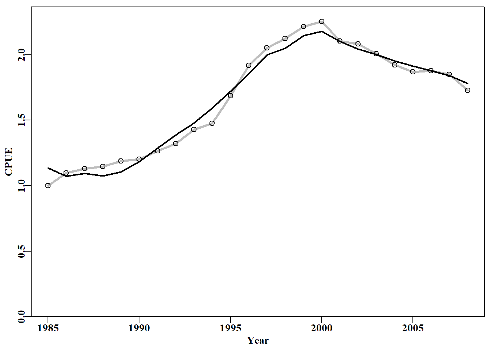
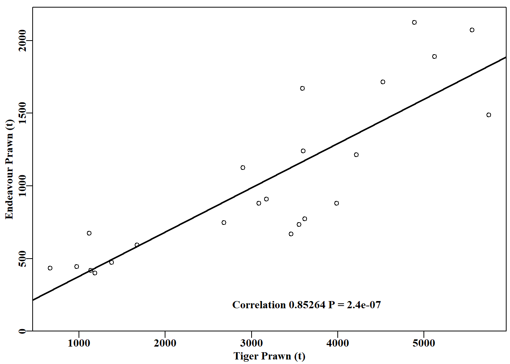
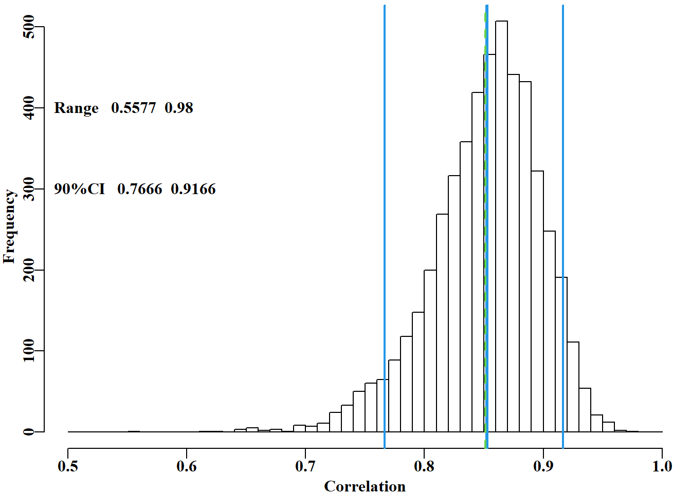
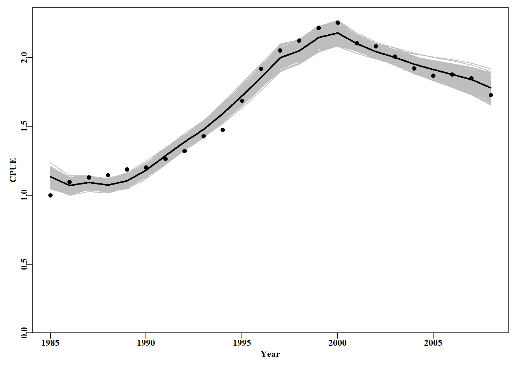
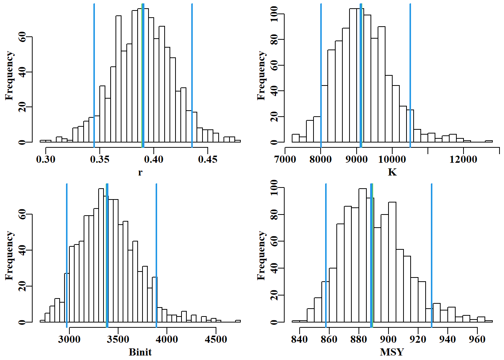
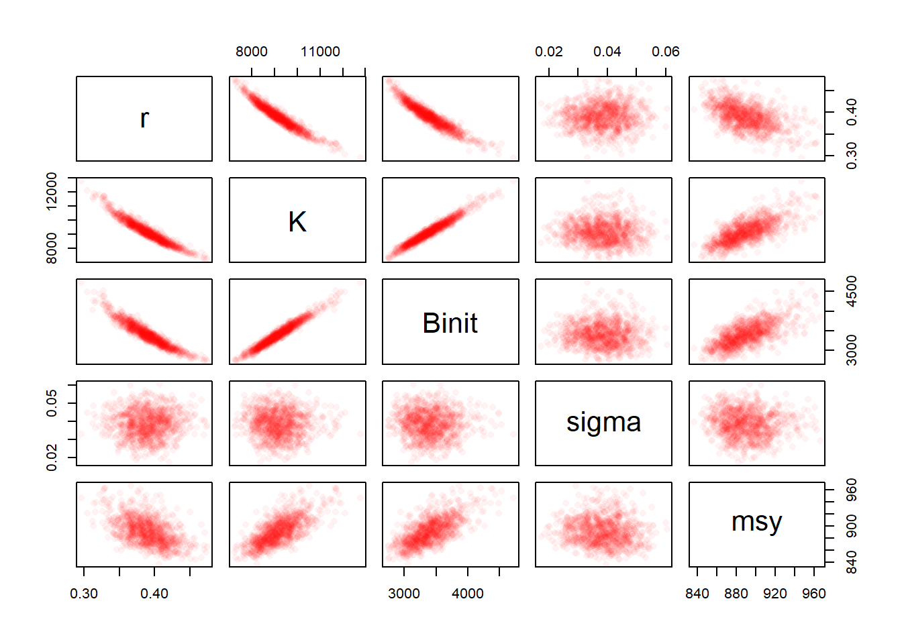
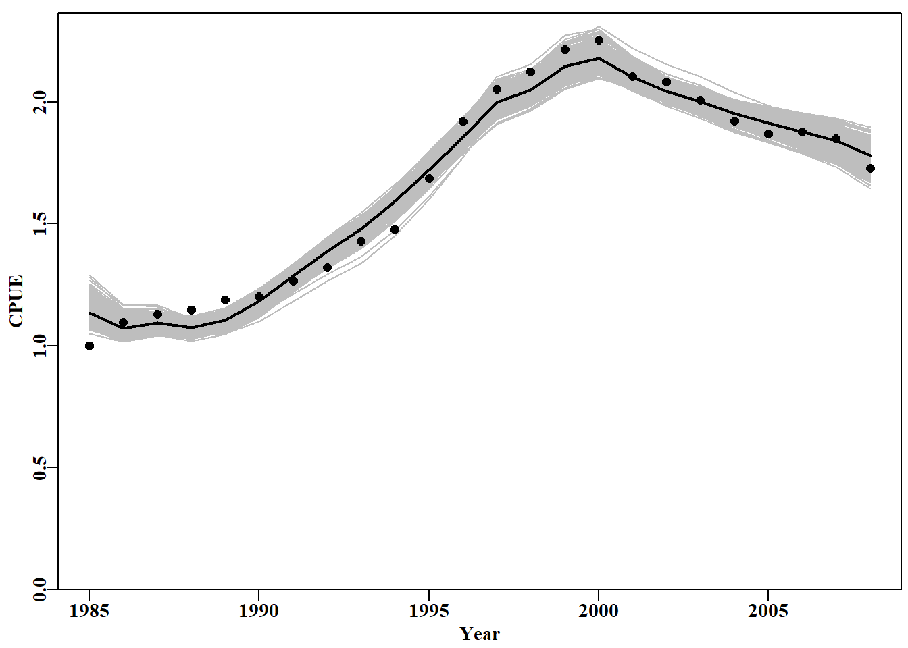
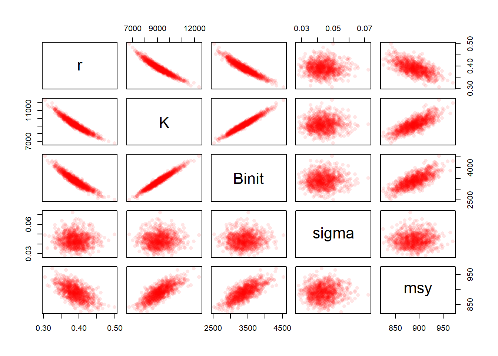
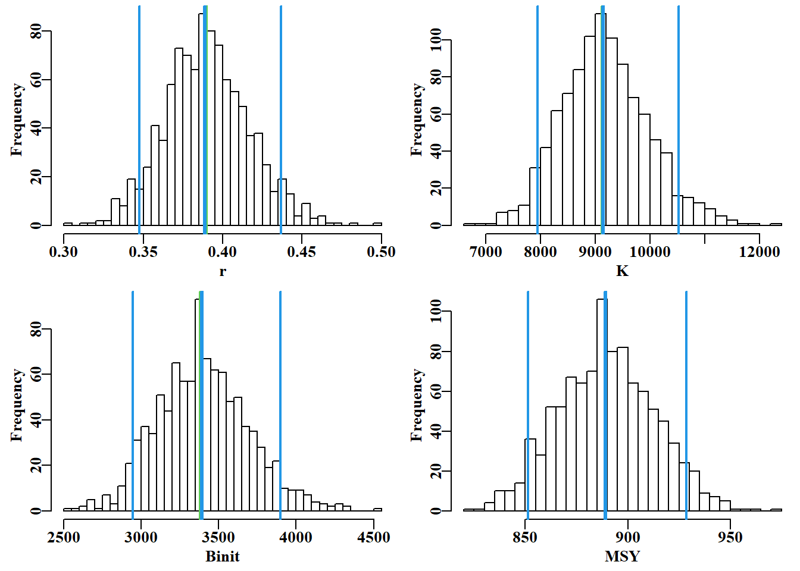
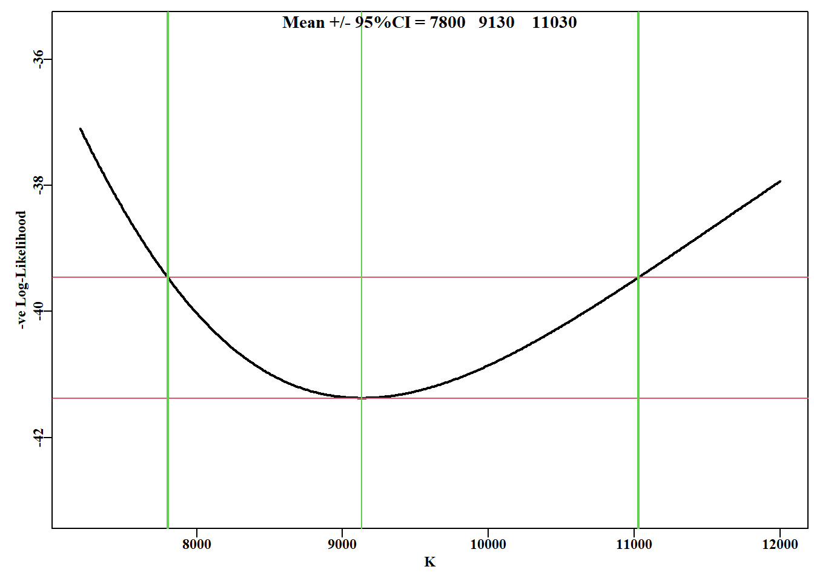

模型不确定性可以是定量的，也可以是定性的。因此，使用完全相同的数据和残差结构的模型可以相互比较，并选择最佳拟合的模型。这些模型可以被认为既相关又不同。然而，当模型不相容时，例如，使用相同结构模型但采用不同的残差误差结构时，它们各自可以产生最佳拟合，模型选择必须基于除拟合质量之外的其他因素。这类模型之间不能平滑过渡，而是构成对所研究系统的定性和定量上不同的描述。模型不确定性是模型选择背后的驱动力之一（Burnham and Anderson, 2002）。即使只有一个模型被开发出来，它也往往是从许多可能的模型中隐含选择出来的。在特定情况下使用多种类型的模型（例如，同时使用过剩生产模型和完全年龄结构模型）往往能带来仅使用一种模型会错过的见解。 遗憾的是，随着用于种群评估建模的资源普遍减少，现在使用多个模型已成为一种日益罕见的选择。
#Fit a surplus production model to abdat fisheries data library(MQMF)library(ggplot2)library(knitr)data(abdat); logce<-log(abdat$cpue)param<-log(c(0.42,9400,3400,0.05))label=c("r","K","Binit","sigma")# simpspm returns bestmod<-nlm(f=negLL,p=param,funk=simpspm,indat=abdat,logobs=logce)outfit(bestmod,title="SP-Model",parnames=label)#backtransforms
nlm solution: SP-Model
minimum : -41.37511
iterations : 20
code : 2 >1 iterates in tolerance, probably solution
par gradient transpar
r -0.9429555 6.743051e-06 0.38948
K 9.1191569 -9.223729e-05 9128.50173
Binit 8.1271026 1.059182e-04 3384.97779
sigma -3.1429030 -8.116218e-07 0.04316
#plot the abdat data and the optimum sp-model fit Fig 6.1 predce<-exp(simpspm(bestmod$estimate,abdat))optresid<-abdat[,"cpue"]/predce#multiply by predce for obsce ymax<-getmax(c(predce,abdat$cpue))plot1(abdat$year,(predce*optresid),type="l",maxy=ymax,cex=0.9, ylab="CPUE",xlab="Year",lwd=3,col="grey",lty=1)points(abdat$year,abdat$cpue,pch=1,col=1,cex=1.1)lines(abdat$year,predce,lwd=2,col=1)# best fit line

图 6.1: abdat 数据集的 Schaefer 剩余产量模型 的最佳拟合用在线性空间表示（红色实线）。灰线穿过数据点，以说明与预测线的差异。The optimum fit of the Schaefer surplus production model to the abdat data set plotted in linear-space (solid red-line). The grey line passes through the data points to clarify the difference with the predicted line.
6.2 自助法（Bootstrapping）
从总体中采集的数据被视为（假定）能够代表该总体以及预期样本值的潜在概率密度分布。这是一个非常重要的假设，最早由 Efron（1979）提出。他提出了这样一个问题：当样本包含或就是关于总体所有可用信息时，为什么不能假设样本真的就是总体，以估计检验统计量的抽样分布？因此，给定一个包含 \(n\) 个观测值的原始样本，自助样本将是从原始样本中有放回地抽取的 \(n\) 个观测值的随机样本。自助样本（即对样本数据值进行有放回的随机重抽样）被假定为近似那些通过反复抽样原始抽样总体所可能产生的值的分布。这些自助样本中的每一个都被视为来自原始总体的独立随机样本。这种有放回的重抽样对某些人来说似乎有违直觉，但可以用来拟合标准误差、百分位数置信区间以及进行假设检验。 据报道，“bootstrap”这个名字来源于故事《莫丘森男爵的冒险记》（The Adventures of Baron Munchausen），在这个故事中，男爵通过自己拉自己的靴带而逃脱溺水，从而从一口井中脱身（Efron and Tibshirani, 1993）。
#regression between catches of NPF prawn species Fig 6.2 data(npf)model<-lm(endeavour~tiger,data=npf)plot1(npf$tiger,npf$endeavour,type="p",xlab="Tiger Prawn (t)", ylab="Endeavour Prawn (t)",cex=0.9)abline(model,col=1,lwd=2)correl<-sqrt(summary(model)$r.squared)pval<-summary(model)$coefficients[2,4]label<-paste0("Correlation ",round(correl,5)," P = ",round(pval,8))text(2700,180,label,cex=1.0,font=7,pos=4)# ggplot(data = npf, aes(x = tiger, y = endeavour)) +# geom_point() +# geom_smooth(method = "lm", se = FALSE) +# theme_bw() +# labs(x = "Tiger Prawn (t)", y = "Endeavour Prawn (t)")

图 6.2: 1970 - 1992 年间澳大利亚北部对虾渔业中基围虾和虎虾产量之间的正相关关系（数据来自 Robins 和 Somers，1994）。The positive correlation between the catches of endeavour and tiger prawns in the Australian Northern Prawn Fishery between 1970 - 1992 (data from Robins and Somers, 1994).
尽管回归高度显著（ \(P< 1e^{-06}\)），但虾类捕捞量的变异性意味着我们难以确定可以有多大信心相信相关性。通常情况下，在相关系数周围估计置信区间并不直接，幸运的是，使用自助法（bootstrapping），这可以轻松完成。我们可以从原始数据集中取出 23 对数据，进行 5000 次自助法抽样，每次计算相关系数。完成后，我们可以计算平均值和不同的分位数。在这种情况下，我们不是对单个值进行自助法，而是对值对进行自助法；我们必须取值对以保持任何内在的相关性。在 R 中，可以通过首先对每个数据向量的位置进行有放回抽样，以确定每个自助法样本要取哪些对进行重新抽样。
代码
# 5000 bootstrap estimates of correlation coefficient Fig 6.3 set.seed(12321)# better to use a less obvious seed, if at all N<-5000# number of bootstrap samples result<-numeric(N)#a vector to store 5000 correlations for(iin1:N){#sample index from 1:23 with replacement pick<-sample(1:23,23,replace=TRUE)#sample is an R function result[i]<-cor(npf$tiger[pick],npf$endeavour[pick])}rge<-range(result)# store the range of results CI<-quants(result)# calculate quantiles; 90%CI = 5% and 95% restrim<-result[result>0]#remove possible -ve values for plot parset(cex=1.0)# set up a plot window and draw a histogram bins<-seq(trunc(range(restrim)[1]*10)/10,1.0,0.01)outh<-hist(restrim,breaks=bins,main="",col=0,xlab="Correlation")abline(v=c(correl,mean(result)),col=c(4,3),lwd=c(3,2),lty=c(1,2))abline(v=CI[c(2,4)],col=4,lwd=2)# and 90% confidence intervals text(0.48,400,makelabel("Range ",rge,sep=" ",sigdig=4),font=7,pos=4)label<-makelabel("90%CI ",CI[c(2,4)],sep=" ",sigdig=4)text(0.48,300,label,cex=1.0,font=7,pos=4)

图 6.3: 5000次自助法估算的基围虾和老虎虾渔获量之间相关性，原始均值用绿色虚线表示，自助法均值和 90% CI 用蓝色实线表示。出于图示目的，已删除了可能的负相关（尽管没有出现）。
# fitting Schaefer model with log-normal residuals with 24 years data(abdat); logce<-log(abdat$cpue)# of abalone fisheries data param<-log(c(r=0.42,K=9400,Binit=3400,sigma=0.05))#log values bestmod<-nlm(f=negLL,p=param,funk=simpspm,indat=abdat,logobs=logce)optpar<-bestmod$estimate# these are still log-transformed predce<-exp(simpspm(optpar,abdat))#linear-scale pred cpue optres<-abdat[,"cpue"]/predce# optimum log-normal residual optmsy<-exp(optpar[1])*exp(optpar[2])/4sampn<-length(optres)# number of residuals and of years
表 6.1: abdat 数据集及相关的最佳预测 cpue（predce）和最佳残差（optres）。The abdat data-set with the associated optimum predicted cpue (predce), and the optimum residuals (optres).
# 1000 bootstrap Schaefer model fits; takes a few seconds start<-Sys.time()# use of as.matrix faster than using data.frame bootfish<-as.matrix(abdat)# and avoid altering original data N<-1000; years<-abdat[,"year"]# need N x years matrices columns<-c("r","K","Binit","sigma")results<-matrix(0,nrow=N,ncol=sampn,dimnames=list(1:N,years))bootcpue<-matrix(0,nrow=N,ncol=sampn,dimnames=list(1:N,years))parboot<-matrix(0,nrow=N,ncol=4,dimnames=list(1:N,columns))for(iin1:N){# fit the models and save solutions bootcpue[i,]<-predce*sample(optres, sampn, replace=TRUE)bootfish[,"cpue"]<-bootcpue[i,]#calc and save bootcpue bootmod<-nlm(f=negLL,p=optpar,funk=simpspm,indat=bootfish, logobs=log(bootfish[,"cpue"]))parboot[i,]<-exp(bootmod$estimate)#now save parameters results[i,]<-exp(simpspm(bootmod$estimate,abdat))#and predce }cat("total time = ",Sys.time()-start, "seconds \n")
# bootstrap replicates in grey behind main plot Fig 6.4 plot1(abdat[,"year"],abdat[,"cpue"],type="n",xlab="Year", ylab="CPUE")# type="n" just lays out an empty plot for(iin1:N)# ready to add the separate components lines(abdat[,"year"],results[i,],lwd=1,col="grey")points(abdat[,"year"],abdat[,"cpue"],pch=16,cex=1.0,col=1)lines(abdat[,"year"],predce,lwd=2,col=1)

图 6.4: 鲍鱼渔业 abdat 数据集最佳预测 cpue 的 1000 个自助估计值。黑点为原始数据，黑线为原始模型拟合的最佳预测 cpue，灰色轨迹为预测 cpue 的 1000 个自助估计值。1000 bootstrap estimates of the optimum predicted cpue from the abdat data set for an abalone fishery. Black points are the original data, the black line is the optimum predicted cpue from the original model fit, and the grey trajectories are the 1000 bootstrap estimates of the predicted cpue.
#histograms of bootstrap parameters and model outputs Fig 6.5 dohist<-function(invect,nmvar,bins=30,bootres,avpar){#adhoc hist(invect[,nmvar],breaks=bins,main="",xlab=nmvar,col=0)abline(v=c(exp(avpar),bootres[pick,nmvar]),lwd=c(3,2,3,2), col=c(3,4,4,4))}msy<-parboot[,"r"]*parboot[,"K"]/4#calculate bootstrap MSY msyB<-quants(msy)#from optimum bootstrap parameters parset(plots=c(2,2),cex=0.9)bootres<-apply(parboot,2,quants); pick<-c(2,3,4)#quantiles dohist(parboot,nmvar="r",bootres=bootres,avpar=optpar[1])dohist(parboot,nmvar="K",bootres=bootres,avpar=optpar[2])dohist(parboot,nmvar="Binit",bootres=bootres,avpar=optpar[3])hist(msy,breaks=30,main="",xlab="MSY",col=0)abline(v=c(optmsy,msyB[pick]),lwd=c(3,2,3,2),col=c(3,4,4,4))

图 6.5: 前三个模型参数的 1000 个自助估计值和 MSY 的柱状图。在每幅图中，两条细外线定义了中位数周围的 90%置信区间，中间的垂直线表示最佳估计值，但这些估计值通常紧靠中位数下方，Binit 模型除外。The 1000 bootstrap estimates of each of the first three model parameters and MSY as histograms. In each plot the two fine outer lines define the inner 90% confidence bounds around the median, the central vertical line denotes the optimum estimates, but these are generally immediately below the medians, except for the Binit.
#relationships between parameters and MSY Fig 6.6 parboot1<-cbind(parboot,msy)# note rgb use, alpha allows for shading, try 1/15 or 1/10 pairs(parboot1,pch=16,col=rgb(red=1,green=0,blue=0,alpha =1/20))

图 6.6: 用 Schaefer 模型拟合 abdat 数据集时，1000 个自助法估算的最佳参数估算值与得出的 MSY 值之间的关系。全色强度由至少 20 个点得出。更多的自助重复将使这些强度图更加完整。The relationships between the 1000 bootstrap estimates of the optimum parameter estimates and the derived MSY values for the Schaefer model fitted to the abdat data-set. Full colour intensity derived from a minimum of 20 points. More bootstrap replicates would fill out these intensity plots.
#Fit Schaefer model and generate the Hessian data(abdat)param<-log(c(r=0.42,K=9400,Binit=3400,sigma=0.05))# Note inclusion of the option hessian=TRUE in nlm function bestmod<-nlm(f=negLL,p=param,funk=simpspm,indat=abdat, logobs=log(abdat[,"cpue"]),hessian=TRUE)outfit(bestmod,backtran =TRUE)#try typing bestmod in console
基础 R 没有用于处理多元正态分布的函数，但可以使用包含合适函数的几个 R 包。MASS 包（Venables 和 Ripley, 2002）包含一个合适的随机数生成器，而 mvtnorm 包则拥有更广泛的多元概率密度函数。这里我们将使用 mvtnorm。
代码
# Use multi-variate normal to generate percentile CI Fig 6.7 library(mvtnorm)# use RStudio, or install.packages("mvtnorm") N<-1000# number of multi-variate normal parameter vectors years<-abdat[,"year"]; sampn<-length(years)# 24 years mvncpue<-matrix(0,nrow=N,ncol=sampn,dimnames=list(1:N,years))columns<-c("r","K","Binit","sigma")# Fill parameter vectors with N vectors from rmvnorm mvnpar<-matrix(exp(rmvnorm(N,mean=optpar,sigma=vcov)), nrow=N,ncol=4,dimnames=list(1:N,columns))# Calculate N cpue trajectories using simpspm for(iin1:N)mvncpue[i,]<-exp(simpspm(log(mvnpar[i,]),abdat))msy<-mvnpar[,"r"]*mvnpar[,"K"]/4#N MSY estimates # plot data and trajectories from the N parameter vectors plot1(abdat[,"year"],abdat[,"cpue"],type="p",xlab="Year", ylab="CPUE",cex=0.9)for(iin1:N)lines(abdat[,"year"],mvncpue[i,],col="grey",lwd=1)points(abdat[,"year"],abdat[,"cpue"],pch=16,cex=1.0)#orig data lines(abdat[,"year"],exp(simpspm(optpar,abdat)),lwd=2,col=1)

图 6.7: 从最优参数及其相关方差-协方差矩阵定义的多变量正态分布中采样的随机参数向量得出的 1000 条 cpue 预测轨迹。The 1000 predicted cpue trajectories derived from random parameter vectors sampled from the multi-variate Normal distribution defined by the optimum parameters and their related variance-covariance matrix.
#correlations between parameters when using mvtnorm Fig 6.8 pairs(cbind(mvnpar,msy),pch=16,col=rgb(red=1,0,0,alpha =1/10))

图 6.8: 从估计的多变量正态分布中取样的 1000 个参数估计值（假定围绕最佳参数估计值）与 Schaefer 模型拟合的丰年鱼量值之间的关系。The relationships between the 1000 parameter estimates sampled from the estimated multi-variate Normal distribution assumed to surround the optimum parameter estimates and the derived MSY values for the Schaefer model fitted to the abdat data set.
#N parameter vectors from the multivariate normal Fig 6.9 mvnres<-apply(mvnpar,2,quants)# table of quantiles pick<-c(2,3,4)# select rows for 5%, 50%, and 95% meanmsy<-mean(msy)# optimum bootstrap parameters msymvn<-quants(msy)# msy from mult-variate normal estimates plothist<-function(x,optp,label,resmvn){hist(x,breaks=30,main="",xlab=label,col=0)abline(v=c(exp(optp),resmvn),lwd=c(3,2,3,2),col=c(3,4,4,4))}# repeated 4 times, so worthwhile writing a short function par(mfrow=c(2,2),mai=c(0.45,0.45,0.05,0.05),oma=c(0.0,0,0.0,0.0))par(cex=0.85, mgp=c(1.35,0.35,0), font.axis=7,font=7,font.lab=7)plothist(mvnpar[,"r"],optpar[1],"r",mvnres[pick,"r"])plothist(mvnpar[,"K"],optpar[2],"K",mvnres[pick,"K"])plothist(mvnpar[,"Binit"],optpar[3],"Binit",mvnres[pick,"Binit"])plothist(msy,meanmsy,"MSY",msymvn[pick])

图 6.9: 从最优解估算的多变量正态中得出的 r、K、Binit 和推导的 MSY 的 1000 个参数估计直方图。在每幅图中，绿线表示算术平均值，蓝色粗线表示中位数，两条蓝色细线表示中位数周围 90%的置信区间。Histograms of the 1000 parameter estimates for r, K, Binit, and the derived MSY, from the multi-variate normal estimated at the optimum solution. In each plot, the green line denotes the arithmetic mean, the thick blue line the median, and the two fine blue lines the inner 90% confidence bounds around the median.
表 6.2: 自助百分位数参数置信区间与方差-协方差矩阵渐近估计值参数置信区间的比较。上表是自助法结果，下表是多元正态分布结果。A comparison of the bootstrap percentile confidence bounds on parameters with those derived from the Asymptotic estimate of the variance-covariance matrix. The top table relates to the bootstrapping and the bottom to the values from the multi-variate normal.
#Fit the Schaefer surplus production model to abdat data(abdat); logce<-log(abdat$cpue)# using negLL param<-log(c(r=0.42,K=9400,Binit=3400,sigma=0.05))optmod<-nlm(f=negLL,p=param,funk=simpspm,indat=abdat,logobs=logce)outfit(optmod,parnames=c("r","K","Binit","sigma"))
nlm solution:
minimum : -41.37511
iterations : 20
code : 2 >1 iterates in tolerance, probably solution
par gradient transpar
r -0.9429555 6.743051e-06 0.38948
K 9.1191569 -9.223729e-05 9128.50173
Binit 8.1271026 1.059182e-04 3384.97779
sigma -3.1429030 -8.116218e-07 0.04316
#the code for MQMF's negLLP function negLLP<-function(pars, funk, indat, logobs, initpar=pars, notfixed=c(1:length(pars)),...){usepar<-initpar#copy the original parameters into usepar usepar[notfixed]<-pars[notfixed]#change 'notfixed' values npar<-length(usepar)logpred<-funk(usepar,indat,...)#funk uses the usepar values pick<-which(is.na(logobs))# proceed as in negLL if(length(pick)>0){LL<--sum(dnorm(logobs[-pick],logpred[-pick],exp(pars[npar]), log=T))}else{LL<--sum(dnorm(logobs,logpred,exp(pars[npar]),log=T))}return(LL)}# end of negLLP
#does negLLP give same answers as negLL when no parameters fixed? param<-log(c(r=0.42,K=9400,Binit=3400,sigma=0.05))bestmod<-nlm(f=negLLP,p=param,funk=simpspm,indat=abdat,logobs=logce)outfit(bestmod,parnames=c("r","K","Binit","sigma"))
nlm solution:
minimum : -41.37511
iterations : 20
code : 2 >1 iterates in tolerance, probably solution
par gradient transpar
r -0.9429555 6.743051e-06 0.38948
K 9.1191569 -9.223729e-05 9128.50173
Binit 8.1271026 1.059182e-04 3384.97779
sigma -3.1429030 -8.116218e-07 0.04316
#Likelihood profile for r values 0.325 to 0.45 rval<-seq(0.325,0.45,0.001)# set up the test sequence ntrial<-length(rval)# create storage for the results columns<-c("r","K","Binit","sigma","-veLL")result<-matrix(0,nrow=ntrial,ncol=length(columns), dimnames=list(rval,columns))# close to optimum bestest<-c(r=0.32,K=11000,Binit=4000,sigma=0.05)for(iin1:ntrial){#i <- 1 param<-log(c(rval[i],bestest[2:4]))#recycle bestest values parinit<-param#to improve the stability of nlm as r changes bestmodP<-nlm(f=negLLP,p=param,funk=simpspm,initpar=parinit, indat=abdat,logobs=log(abdat$cpue),notfixed=c(2:4), typsize=magnitude(param),iterlim=1000)bestest<-exp(bestmodP$estimate)result[i,]<-c(bestest,bestmodP$minimum)# store each result }minLL<-min(result[,"-veLL"])#minimum across r values used.
表 6.3: nlm 解决方案 126 行中的前 12 条记录用于绘制 r 的似然曲线。The first 12 records from the 126 rows of the nlm solutions that are used to make the likelihood profile on r. The strong correlation between r, K, and Binit is, once again, apparent.
#Likelihood profile for K values 7200 to 12000 Kval<-seq(7200,12000,10)ntrial<-length(Kval)columns<-c("r","K","Binit","sigma","-veLL")resultK<-matrix(0,nrow=ntrial,ncol=length(columns), dimnames=list(Kval,columns))bestest<-c(r=0.45,K=7500,Binit=2800,sigma=0.05)for(iin1:ntrial){param<-log(c(bestest[1],Kval[i],bestest[c(3,4)]))parinit<-parambestmodP<-nlm(f=negLLP,p=param,funk=simpspm,initpar=parinit, indat=abdat,logobs=log(abdat$cpue), notfixed=c(1,3,4),iterlim=1000)bestest<-exp(bestmodP$estimate)resultK[i,]<-c(bestest,bestmodP$minimum)}minLLK<-min(resultK[,"-veLL"])#kable(head(result,12),digits=c(4,3,3,4,5)) # if wanted.
代码
#likelihood profile on K from the Schaefer model Fig 6.11 plotprofile(resultK,var="K",lwd=2)

图 6.11: Schaefer 剩余产量模型对 abdat 数据集的 K 参数的似然曲线，与 r 参数的处理方式相同。红线是最小值和最小值加 1.92（卡方分布 1 自由度的 95% 水平，见正文）。垂直粗线是围绕 9128.5 均值的近似 95% 置信区间。
表 6.4: 用于制作 K 的似然轮廓的 nlm 解的前 8 条记录，共481行。包括反转换后的负对数似然值（缩放到总和为 1.0）及其运行累积和。
r
K
Binit
sigma
-veLL
likes
cumlike
7200
0.47314
7200
2689.875
0.05158
-37.09799
7e-05
0.00007
7210
0.47257
7210
2693.444
0.05147
-37.14518
7e-05
0.00014
7220
0.47201
7220
2697.023
0.05137
-37.19213
8e-05
0.00022
7230
0.47145
7230
2700.602
0.05127
-37.23881
8e-05
0.00030
7240
0.47089
7240
2704.182
0.05118
-37.28524
8e-05
0.00038
7250
0.47033
7250
2707.762
0.05108
-37.33141
9e-05
0.00047
7260
0.46977
7260
2711.341
0.05098
-37.37732
9e-05
0.00056
7270
0.46922
7270
2714.933
0.05088
-37.42298
1e-04
0.00065
代码
#K parameter likelihood profile Fig 6.12 oldp<-plot1(resK[,"K"],resK[,"likes"],xlab="K value", ylab="Likelihood",lwd=2)lower<-which.closest(0.025,resK[,"cumlike"])mid<-which(resK[,"likes"]==max(resK[,"likes"]))upper<-which.closest(0.975,resK[,"cumlike"])abline(v=c(resK[c(lower,mid,upper),"K"]),col=1,lwd=c(1,2,1))label<-makelabel("",resK[c(lower,mid,upper),"K"],sep=" ")text(9500,0.005,label,cex=1.2,pos=4)par(oldp)# return par to old settings; this line not in book
#examine effect on -veLL of MSY values from 740 - 1050t #need a different negLLP() function, negLLO(): O for output. #now optvar=888.831 (rK/4), the optimum MSY, varval ranges 740-1050 #and wght is the weighting to give to the penalty negLLO<-function(pars,funk,indat,logobs,wght,optvar,varval){logpred<-funk(pars,indat)LL<--sum(dnorm(logobs,logpred,exp(tail(pars,1)),log=T))+wght*((varval-optvar)/optvar)^2#compare with negLL return(LL)}# end of negLLO msyP<-seq(740,1020,2.5); optmsy<-exp(optmod$estimate[1])*exp(optmod$estimate[2])/4ntrial<-length(msyP)wait<-400columns<-c("r","K","Binit","sigma","-veLL","MSY","pen", "TrialMSY")resultO<-matrix(0,nrow=ntrial,ncol=length(columns), dimnames=list(msyP,columns))bestest<-c(r=0.47,K=7300,Binit=2700,sigma=0.05)for(iin1:ntrial){# i <- 1 param<-log(bestest)bestmodO<-nlm(f=negLLO,p=param,funk=simpspm,indat=abdat, logobs=log(abdat$cpue),wght=wait, optvar=optmsy,varval=msyP[i],iterlim=1000)bestest<-exp(bestmodO$estimate)ans<-c(bestest,bestmodO$minimum,bestest[1]*bestest[2]/4, wait*((msyP[i]-optmsy)/optmsy)^2,msyP[i])resultO[i,]<-ans}minLLO<-min(resultO[,"-veLL"])
代码
#tabulate first and last few records of profile on MSY kable(head(resultO[,1:7],4),digits=c(3,3,3,4,2,3,2))kable(tail(resultO[,1:7],4),digits=c(3,3,3,4,2,3,2))
#activate and plot the fisheries data in abdat Fig 6.14 data(abdat)# type abdat in the console to see contents plotspmdat(abdat)#use helper function to plot fishery stats vs year
# Conduct MCMC analysis to illustrate burn-in. Fig 6.15 data(abdat); logce<-log(abdat$cpue)fish<-as.matrix(abdat)# faster to use a matrix than a data.frame! begin<-Sys.time()# enable time taken to be calculated chains<-1# 1 chain per run; normally do more burnin<-0# no burn-in for first three chains N<-100# Number of MCMC steps to keep step<-4# equals one step per parameter so no thinning priorcalc<-calcprior# define the prior probability function scales<-c(0.065,0.055,0.065,0.425)#found by trial and error set.seed(128900)#gives repeatable results in book; usually omitted inpar<-log(c(r=0.4,K=11000,Binit=3600,sigma=0.05))result1<-do_MCMC(chains,burnin,N,step,inpar,negLL,calcpred=simpspm, calcdat=fish,obsdat=logce,priorcalc,scales)inpar<-log(c(r=0.35,K=8500,Binit=3400,sigma=0.05))result2<-do_MCMC(chains,burnin,N,step,inpar,negLL,calcpred=simpspm, calcdat=fish,obsdat=logce,priorcalc,scales)inpar<-log(c(r=0.45,K=9500,Binit=3200,sigma=0.05))result3<-do_MCMC(chains,burnin,N,step,inpar,negLL,calcpred=simpspm, calcdat=fish,obsdat=logce,priorcalc,scales)burnin<-50# strictly a low thinning rate of 4; not enoughstep<-16# 16 thinstep rate = 4 parameters x 4 = 16 N<-10000# 16 x 10000 = 160,000 steps + 50 burnininpar<-log(c(r=0.4,K=9400,Binit=3400,sigma=0.05))result4<-do_MCMC(chains,burnin,N,step,inpar,negLL,calcpred=simpspm, calcdat=fish,obsdat=logce,priorcalc,scales)post1<-result1[[1]][[1]]post2<-result2[[1]][[1]]post3<-result3[[1]][[1]]postY<-result4[[1]][[1]]cat("time = ",Sys.time()-begin,"\n")
#first example and start of 3 initial chains for MCMC Fig6.15 parset(cex=0.85)P<-75# the first 75 steps only start to explore parameter spaceplot(postY[,"K"],postY[,"r"],type="p",cex=0.2,xlim=c(7000,13000), ylim=c(0.28,0.47),col=8,xlab="K",ylab="r",panel.first=grid())lines(post2[1:P,"K"],post2[1:P,"r"],lwd=1,col=1)points(post2[1:P,"K"],post2[1:P,"r"],pch=15,cex=1.0)lines(post1[1:P,"K"],post1[1:P,"r"],lwd=1,col=1)points(post1[1:P,"K"],post1[1:P,"r"],pch=1,cex=1.2,col=1)lines(post3[1:P,"K"],post3[1:P,"r"],lwd=1,col=1)points(post3[1:P,"K"],post3[1:P,"r"],pch=2,cex=1.2,col=1)
#pairs plot of parameters from the first MCMC Fig 6.16 posterior<-result4[[1]][[1]]msy<-posterior[,1]*posterior[,2]/4pairs(cbind(posterior[,1:4],msy),pch=16,col=rgb(1,0,0,1/50),font=7)
#plot the traces from the first MCMC example Fig 6.17 posterior<-result4[[1]][[1]]par(mfrow=c(4,2),mai=c(0.4,0.4,0.05,0.05),oma=c(0.0,0,0.0,0.0))par(cex=0.8, mgp=c(1.35,0.35,0), font.axis=7,font=7,font.lab=7)label<-colnames(posterior)N<-dim(posterior)[1]for(iin1:4){ymax<-getmax(posterior[,i]); ymin<-getmin(posterior[,i])plot(1:N,posterior[,i],type="l",lwd=1,ylim=c(ymin,ymax), panel.first=grid(),ylab=label[i],xlab="Step")plot(density(posterior[,i]),lwd=2,col=2,panel.first=grid(),main="")}
如果我们使用一个远大于初始值的薄化率运行 MCMC，希望能够观察到序列相关性的减少。这里我们将薄化率增加了 128 倍（从 4x4=16 增加到 4x128=512），并绘制了结果。尽管我们将链的长度减少到 1000，但总步数是（512 x 1000）+（512 x 100）= 563200，因此我们可以预期这次运行会比初始的 MCMC 运行稍长一些。了解运行时间总是个好主意。这些例子最多只需几分钟就能运行完成，而大多数用于严肃模型的 MCMC 运行需要数小时甚至数天。
代码
#setup MCMC with thinstep of 128 per parameter Fig 6.19 begin=gettime()scales<-c(0.06,0.05,0.06,0.4)inpar<-log(c(r=0.4,K=9400,Binit=3400,sigma=0.05))result<-do_MCMC(chains=1,burnin=100,N=1000,thinstep=512,inpar, negLL,calcpred=simpspm,calcdat=fish, obsdat=logce,calcprior,scales,schaefer=TRUE)posterior<-result[[1]][[1]]label<-colnames(posterior)[1:4]parset(plots=c(2,2),cex=0.85)for(iin1:4)auto<-acf(posterior[,i],type="correlation",lwd=2, plot=TRUE,ylab=label[i],lag.max=20)
# plot marginal distributions from the MCMC Fig 6.20 dohist<-function(x,xlab){# to save a little space return(hist(x,main="",breaks=50,col=0,xlab=xlab,ylab="", panel.first=grid()))}# ensure we have the optimum solution available param<-log(c(r=0.42,K=9400,Binit=3400,sigma=0.05))bestmod<-nlm(f=negLL,p=param,funk=simpspm,indat=abdat, logobs=log(abdat$cpue))optval<-exp(bestmod$estimate)posterior<-result[[1]][[1]]#example above N=1000, thin=512 par(mfrow=c(5,1),mai=c(0.4,0.3,0.025,0.05),oma=c(0,1,0,0))par(cex=0.85, mgp=c(1.35,0.35,0), font.axis=7,font=7,font.lab=7)np<-length(param)for(iin1:np){#store invisible output from hist for later use outH<-dohist(posterior[,i],xlab=colnames(posterior)[i])abline(v=optval[i],lwd=3,col=4)tmp<-density(posterior[,i])scaler<-sum(outH$counts)*(outH$mids[2]-outH$mids[1])tmp$y<-tmp$y*scalerlines(tmp,lwd=2,col=2)}msy<-posterior[,"r"]*posterior[,"K"]/4mout<-dohist(msy,xlab="MSY")tmp<-density(msy)tmp$y<-tmp$y*(sum(mout$counts)*(mout$mids[2]-mout$mids[1]))lines(tmp,lwd=2,col=2)abline(v=(optval[1]*optval[2]/4),lwd=3,col=4)mtext("Frequency",side=2,outer=T,line=0.0,font=7,cex=1.0)
#profile the running of do_MCMC using the now well known abdat data(abdat); logce<-log(abdat$cpue); fish<-as.matrix(abdat)param<-log(c(r=0.39,K=9200,Binit=3400,sigma=0.05))Rprof(append=TRUE)# note the use of negLL1() result<-do_MCMC(chains=1,burnin=100,N=20000,thinstep=16,inpar=param, infunk=negLL1,calcpred=simpspm,calcdat=fish, obsdat=logce,priorcalc=calcprior, scales=c(0.07,0.06,0.07,0.45))Rprof(NULL)outprof<-summaryRprof()
提高执行速度的一个非常有效的方法是将 R 代码与另一种可以编译成可执行代码而非 R 解释代码的计算机语言相结合。将 C++代码包含到 R 代码中最简单的方法可能是使用 Rcpp 包（Eddelbuettel & Francois, 2011; Eddelbuettel, 2013; Eddelbuettel & Balmuta, 2017）。显然，要使用这种方法，需要同时拥有 C++编译器和 Rcpp 包，这两者都可以从 CRAN 仓库下载（在 RStudio 中完成最为容易）。如果读者正在使用 Linux 或 Mac 计算机，那么他们已经拥有 GNU C++编译器（Rcpp 所使用的编译器）。在 Windows 系统上，安装 GNU C++编译器最简单的方法是访问 CRAN 主页，点击”Download R for Windows”链接，然后点击 Rtools 链接。务必将安装目录添加到路径中。这还提供了许多用于编写 R 包的工具。Rcpp 提供了一些将 C++代码包含进来的方法，其中最简单的方法可能是使用 cppFunction() 在每个会话开始时编译代码。 然而，更好的方法是使用函数 Rcpp::sourceCpp() 从磁盘加载 C++文件，就像你可能使用 source() 加载 R 代码文件一样。所以有多种选择，如果你打算采用这种加速代码的策略，这些选择都值得探索。
library(Rcpp)#Send a text string containing the C++ code to cppFunction this will #take a few seconds to compile, then the function simpspmC will #continue to be available during the rest of your R session. The #code in this chunk could be included into its own R file, and then #the R source() function can be used to include the C++ into a #session. indat must have catch in col2 (col1 in C++), and cpue in #col3 (col2 in C++). Note the use of ; at the end of each line. #Like simpspm(), this returns only the log(predicted cpue). cppFunction('NumericVector simpspmC(NumericVector pars, NumericMatrix indat, LogicalVector schaefer) { int nyrs = indat.nrow(); NumericVector predce(nyrs); NumericVector biom(nyrs+1); double Bt, qval; double sumq = 0.0; double p = 0.00000001; if (schaefer(0) == TRUE) { p = 1.0; } NumericVector ep = exp(pars); biom[0] = ep[2]; for (int i = 0; i < nyrs; i++) { Bt = biom[i]; biom[(i+1)]=Bt+(ep[0]/p)*Bt*(1-pow((Bt/ep[1]),p))- indat(i,1); if (biom[(i+1)] < 40.0) biom[(i+1)] = 40.0; sumq += log(indat(i,2)/biom[i]); } qval = exp(sumq/nyrs); for (int i = 0; i < nyrs; i++) { predce[i] = log(biom[i] * qval); } return predce; }')
#Ensure results obtained from simpspm and simpspmC are same library(microbenchmark)data(abdat)fishC<-as.matrix(abdat)# Use a matrix rather than a data.frame inpar<-log(c(r=0.389,K=9200,Binit=3300,sigma=0.05))spmR<-exp(simpspm(inpar,fishC))# demonstrate equivalence #need to declare all arguments in simpspmC, no default values spmC<-exp(simpspmC(inpar,fishC,schaefer=TRUE))out<-microbenchmark(# verything identical calling function simpspm(inpar,fishC,schaefer=TRUE), simpspmC(inpar,fishC,schaefer=TRUE), times=1000)out2<-summary(out)[,2:8]out2<-rbind(out2,out2[2,]/out2[1,])rownames(out2)<-c("simpspm","simpspmC","TimeRatio")
#How much does using simpspmC in do_MCMC speed the run time? #Assumes Rcpp code has run, eg source("Rcpp_functions.R") set.seed(167423)#Can use getseed() to generate a suitable seed beginR<-gettime()#to enable estimate of time taken setscale<-c(0.07,0.06,0.07,0.45)reps<-2000#Not enough but sufficient for demonstration param<-log(c(r=0.39,K=9200,Binit=3400,sigma=0.05))resultR<-do_MCMC(chains=1,burnin=100,N=reps,thinstep=128, inpar=param,infunk=negLL1,calcpred=simpspm, calcdat=fishC,obsdat=log(abdat$cpue),schaefer=TRUE, priorcalc=calcprior,scales=setscale)timeR<-gettime()-beginRcat("time = ",timeR,"\n")
postR<-resultR[[1]][[1]]set.seed(167423)# Use the same pseudo-random numbers and the beginC<-gettime()# same starting point to make the comparsion param<-log(c(r=0.39,K=9200,Binit=3400,sigma=0.05))resultC<-do_MCMC(chains=1,burnin=100,N=reps,thinstep=128, inpar=param,infunk=negLL1,calcpred=simpspmC, calcdat=fishC,obsdat=log(abdat$cpue),schaefer=TRUE, priorcalc=calcprior,scales=setscale)timeC<-gettime()-beginCcat("time = ",timeC,"\n")# note the same acceptance rates
#run multiple = 3 chains setscale<-c(0.07,0.06,0.07,0.45)# I only use a seed for set.seed(9393074)# reproducibility within this book reps<-10000# reset the timer beginC<-gettime()# remember a thinstep=256 is insufficient resultC<-do_MCMC(chains=3,burnin=100,N=reps,thinstep=256, inpar=param,infunk=negLL1,calcpred=simpspmC, calcdat=fishC,obsdat=log(fishC[,"cpue"]), priorcalc=calcprior,scales=setscale,schaefer=TRUE)cat("time = ",gettime()-beginC," secs \n")
time = 132.9696 secs
代码
#3 chain run using simpspmC, 10000 reps, thinstep=256 Fig 6.22 par(mfrow=c(2,2),mai=c(0.4,0.45,0.05,0.05),oma=c(0.0,0,0.0,0.0))par(cex=0.85, mgp=c(1.35,0.35,0), font.axis=7,font=7,font.lab=7)label<-c("r","K","Binit","sigma")for(iin1:4){plot(density(resultC$result[[2]][,i]),lwd=2,col=1, xlab=label[i],ylab="Density",main="",panel.first=grid())lines(density(resultC$result[[1]][,i]),lwd=2,col=2)lines(density(resultC$result[[3]][,i]),lwd=2,col=3)}
#generate summary stats from the 3 MCMC chains av<-matrix(0,nrow=3,ncol=4,dimnames=list(1:3,label))sig2<-av# do the variance relsig<-av# relative to mean of all chains for(iin1:3){tmp<-resultC$result[[i]]av[i,]<-apply(tmp[,1:4],2,mean)sig2[i,]<-apply(tmp[,1:4],2,var)}cat("Average \n")
Average
代码
av
r K Binit sigma
1 0.3821707 9495.580 3522.163 0.04805695
2 0.3809524 9530.307 3537.186 0.04811021
3 0.3822318 9487.911 3522.021 0.04810015
图 6.24: 在 2048（虚线）和 1024（黑色实线）的稀疏率下，使用 1000 和 2000 个重复序列计算的 K 参数边际密度分布在两个链之间的变化。The variation between two chains in the marginal density distributions for the K parameter using 1000 and 2000 replicates at thinning rates of 2048 (dashed line) and 1024 (solid black line).
本章的目的不是鼓励人们编写自己的自助、渐近误差、似然分布或 MCMC 函数，而是让他们探索这些方法，获得直觉，以便在使用这些方法时能够清楚地认识到它们的优势，同样重要的是，认识到它们的局限性。在实施 MCMC 分析时尤其如此，人们最好使用 Stan 或 Template Model Builder（Kristensen 等，2016）或 AD Model Builder（Fournier 等，1998；Fournier 等，2012）等工具。尽管如此，我们还是通过使用 MCMC 详细介绍了贝叶斯统计的应用，因为这确实是捕捉任何特定建模分析中固有的所有不确定性的最佳方法。尽管如此，在许多渔业模型中，许多参数，如自然死亡率、繁殖陡度和一些选择性参数，都被设定为常数，在贝叶斯背景下，这意味着信息量极大的先验。这种说法有点矫揉造作，因为如果不对这些参数进行估计，我们就不需要考虑任何先验概率，但原则上这就是它的含义。解决此类问题的通常方法是研究此类参数的似然曲线，或进行敏感性分析，研究使用不同常数的影响。甚至可以使用标准化的似然曲线作为先验概率。
诚然，使用 MCMC 可以更全面地描述建模情景中的变化，但这种分析无法捕捉模型的不确定性，在这种情况下，结构不同的模型可能会对所评估的种群动态提供不同的看法。这就是通常讨论的模型平均概念。不过，这也提出了一个问题，即哪个模型被认为是最现实的，以及在它们可能完全不相称的情况下，每个模型的权重是多少。不过，在研究任何建模结果时，都需要考虑模型的不确定性。正如 Punt 和 Hilborn（1997）所说：“最常见的方法是选择一个单一的结构模型，并只考虑其参数的不确定性。另一种更站得住脚的方法是考虑一系列真正不同的结构模型。然而，除了计算量更大之外，还很难’约束’所考虑的模型范围。与此相关的一个问题是，如何确定有多少模型参数应被视为不确定参数”。